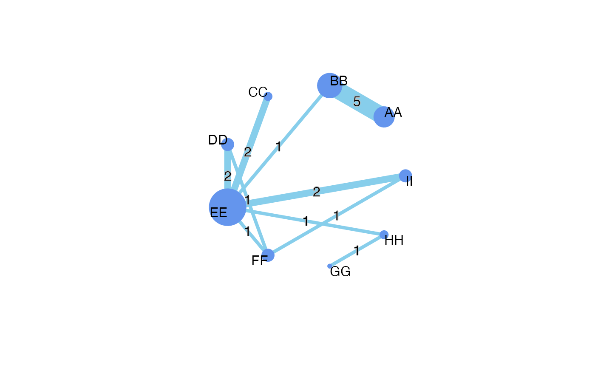

To plot the network graph with SUCRA.
net_score_plot( nmt, sucra, scl = 1, ofs = 0.05, lab, font.size, title.size, sucra.text.size, pos = 0.5, labels = "", font.family = c("Helvetica", "Times New Roman"), net.scale = 1.1, plot.scale = 0.7 )
| nmt | results from model_netmeta function |
|---|---|
| sucra | sucra results from SUCRA function |
| scl | additional space added outside of edges in the net graph |
| ofs | distance between edges in the net graph |
| lab | an optional vector with treatment labels in the net graph |
| font.size | font size |
| title.size | sucra title size |
| sucra.text.size | sucra text size |
| pos | a [0, 1] specifying the position of the number of studies on the lines connecting treatments (edges) |
| labels | label of the whole plots |
| font.family | "Helvetica" or "Times New Roman" |
| net.scale | the scaled size of the net plot |
| plot.scale | the scaled size of the sucra plot |
a ggplot object
LDT1 <- read.csv(system.file("extdata", "HR_SH_D.csv", package = "net.meta")) trt1 <- read.table(system.file("extdata", "HR_SH_D.txt", package = "net.meta"), header=TRUE,quote = '"', stringsAsFactors=FALSE) trt1$description <- factor(trt1$description, trt1$description) LDT1$study <- factor(LDT1$study, unique(LDT1$study)) bmt1 <- model_gemtc( long.data=LDT1, id.treatments=trt1, reference="A", outcome="HR", mtc.n.adapt = 5000, mtc.n.iter = 10000, mtc.thin = 20)#> Compiling model graph #> Resolving undeclared variables #> Allocating nodes #> Graph information: #> Observed stochastic nodes: 34 #> Unobserved stochastic nodes: 43 #> Total graph size: 643 #> #> Initializing model #># View(bmt1) sucra1 <-SUCRA(bmt1) trt1$label <- paste0(trt1$id,"-", trt1$description) LDT1$label <- factor(LDT1$treatment, labels = trt1$label) nmt1 <- model_netmeta(long.data = LDT1, treatment=LDT1$treatment, id.treatments = trt1, reference = "A", outcome = "HR") # View(nmt1) p<- net_score_plot( nmt1, sucra1, lab=trt1$description, scl=1.1,ofs =0, font.size = 1, pos=0.5, title.size=10, sucra.text.size=4, font.family="Helvetica", labels="")